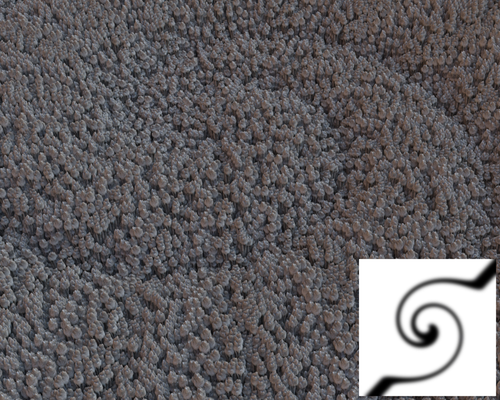
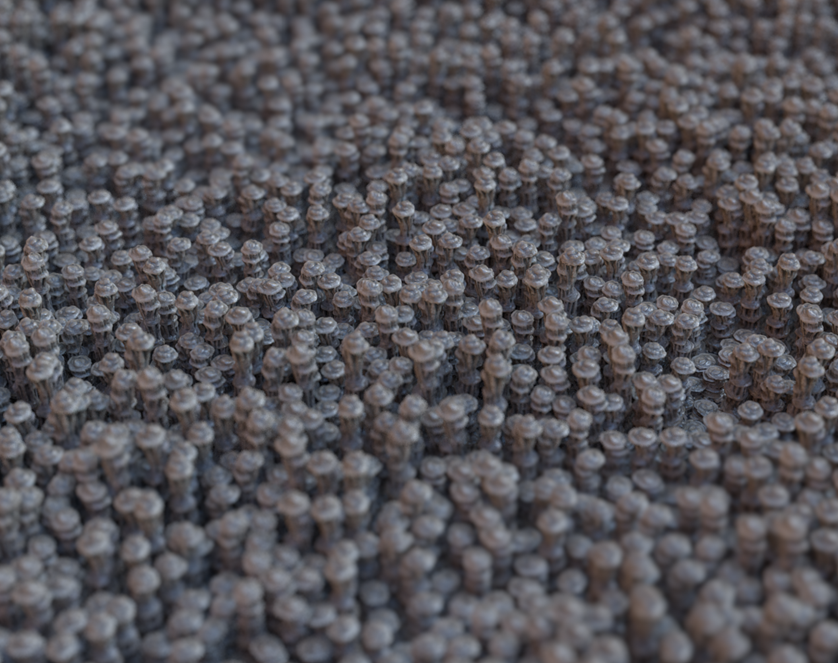

在本教程中，我们将使用 XGen 创建一个复杂场景，该场景中包含一个基本体的 5 万多个实例，而且这个基本体本身也有 10 万多个三角形。最终场景共有约 30 亿个可见的三角形，但渲染时只会使用 1.2 GB 内存。
要下载对应的场景，请单击此处。
首先，加载要用作 XGen 归档的几何体。稍后我们将使用 XGen 的“大小”(Size)属性来调整它的大小。您可以对模型应用任何初始着色器，因为稍后还可以对其进行修改。在导出归档前，为了确保导出为 Arnold 格式，应加载 MtoA 插件。另外，还应打开 Arnold“渲染设置”(Render Settings)来初始化场景的 MtoA 设置。保存场景，然后再继续操作。
选择立方体后，转到“生成 > 将当前选择项导出为归档...”(Generate > Export Selection as Archive(s)...)将“归档文件名”(Archive Name)重命名为 Stalagmite，然后选择将归档保存到 Local Archives 文件夹。
创建一个多边形平面。我们将使用此平面指定 XGen 描述。选择该多边形平面，然后转到“生成 > 创建描述...”(Generate > Create Description...)。此操作将打开“创建 XGen 描述”(Create XGen Description)。选择“自定义几何体/***归档文件”(Custom Geometry/Archives)。保留其他默认设置不变，然后单击“创建”(Create)***。
在“归档文件”(Archive Files)部分，添加前面创建的归档。您可能需要修改下方的“大小”(Size)属性，使基本体的大小适合场景。
刚才，基本体是随机散布在平面上，但大小和方向都是相同的。我们将在“扭曲”(Twist)属性中使用一个 XGen 示例表达式来为方向增添一些随机性：
在“基本体属性”(Primitive Attributes)下，单击“扭曲”(Twist)滑块控件右侧的向下箭头。从菜单中依次选择以下各项：“加载表达式 > 示例 > 几何体 > flatten_Room”(Load Expression > samples > Geometry > flatten_Room)。您应该会看到“宽度”(Width)和“深度”(Depth)属性出现在“扭曲”(Twist)下方。将“扭曲宽度”(Twist Width)增大到至少 200。
根据表达式编辑器中使用的值，您可能需要更改“密度”(Density)值。如果石笋归档过于密集地聚在一起，您可以减小密度值。相反，如果它们相距太远，则可能需要增大密度或减小最大宽度大小。下图显示了增大密度对 XGen 创建的基本体数量的影响。
一个常见问题是您的场景可能会有过多的基本体，从而降低 Maya 视口的性能。在 XGen 的“预览/输出”(Preview/Ouput)选项卡中，您可以降低“预览设置”(Preview Settings)部分的“百分比”(Percent)属性。这将减少视口中当前显示的基本体数量，同时仍能在调用 Arnold 时渲染所有基本体。
我们可以结合使用纹理贴图和表达式来控制基本体的长度（高度）。首先，创建一个纹理贴图来控制它们的长度。单击“长度”(Length)右侧的向下箭头。选择“创建贴图...”(Create Map...)（请注意，仅在平面指定有 Maya 着色器时该选项才有效，这一点非常重要）。将“贴图分辨率”(Map Resolution)增加到 200 左右。然后，单击“创建”(Create)。
这时，在“Hypershade”或“节点编辑器”(Node Editor)窗口中应该会看到，文件纹理节点已连接到平面。选择该文件纹理，然后打开要用于驱动基本体长度的纹理贴图。要在 XGen 中更新文件纹理，需要单击“长度”(Length)属性控件右侧的磁盘图标。
目前高度值介于 0 到 1 之间。我们要更改此范围，并为基本体的高度增添一些随机性。我们可以通过修改当前的“长度”(Length)表达式来实现这一点。
单击“长度”(Length)滑块控件右侧的表达式图标。在“表达式编辑器”(Expression Editor)中应该可以看到以下长度表达式文本：nw $a=map('${DESC}/paintmaps/length'); #3dpaint,200.0.
$a
在“表达式编辑器”(Expression Editor)中的最后一行前面添加以下代码行：$a = 2*$a + rand(0,0.75); 现在基本体的长度范围将介于 0 到 2 之间，并会另外添加介于 0 到 0.75 之间的随机值。完成后，单击“接受”(Accept)。

我们将使用 skydome_light 为场景提供照明。在 Arnold 菜单中，选择“Arnold > 灯光 > 天穹灯光”(Arnold > Lights > SkyDome Light)。将一个文件纹理连接到天穹灯光的“颜色”(Color)属性，然后选择一个合适的 HDR 贴图。在天穹灯光的 Arnold 设置中调整“曝光”(Exposure)，使灯光均匀照亮场景。为了减少场景中的任何阴影噪波，将灯光采样数增大到 3。我们将为摄影机增添一些景深来模拟微距拍摄效果。将摄影机放在靠近 XGen 描述的位置。您还需要增大摄影机的焦距。最终的图像中使用的值为 65mm。选择摄影机并转到 Arnold 设置。选择“启用 DOF”(Enable DOF)，然后选择一个聚焦距离。要为摄影机添加浅景深，请增大“光圈大小”(Aperture Size)。您需要根据场景的大小调整此值。
您应该使用 IPR 对场景进行测试渲染。将 IPR 渲染与 MtoA 结合使用，您能够交互式地更新场景中的照明、摄影机和着色器，并获得快速反馈。对 XGen 描述进行任何调整后，您可能需要刷新 IPR。对外观满意后，就可以进行最终渲染了。将“摄影机(AA)”(Camera (AA))采样数增大到 7 或 8 左右。您可能需要根据图像中包含摄影机景深的区域中可见的噪波量来调整此值。如果您发现场景的间接照明区域有任何噪波，可尝试将“漫反射”(Diffuse) (GI) 采样数增大到 2 或 3。

本教程刊载于《3D World》杂志的第 [189] 期。